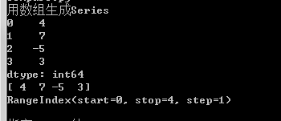

Pandas最初被作为金融数据分析工具而开发出来，因此，pandas为
时间序列分析提供了很好的支持。
基本功能
• 开发pandas时提出的需求
• 具备按轴自动或显式数据对齐功能的数据结构
• 集成时间序列功能
• 既能处理时间序列数据也能处理非时间序列数据的数据结构
• 数学运算和约简（比如对某个轴求和）可以根据不同的元数据（轴编号）执行
• 灵活处理缺失数据
• 合并及其他出现在常见数据库（例如基于SQL的）中的关系型运算
数据结构 Series
• Series是一种类似于一维数组的对象，它由一组数据（各种NumPy数据类型）
以及一组与之相关的数据标签（即索引）组成。
• Series的字符串表现形式为：索引在左边，值在右边。
• 创建
• 读写
• 运算
from pandas import Series
print('用数组生成Series')
obj = Series([4, 7, -5, 3])
print(obj)
print(obj.values)
print(obj.index)
print()
print('指定Series的index')
obj2 = Series([4, 7, -5, 3], index = ['d', 'b', 'a','c'])
print(obj2)
print(obj2.index)
print(obj2['a'])
obj2['d'] = 6
print (obj2[['c', 'a', 'd']])
print(obj2[obj2 > 0])
print('b' in obj2)
print('e' in obj2)
print()
print('使用字典生成Series')
sdata = {'Ohio':45000, 'Texas':71000, 'Oregon':16000, 'Utah':5000}
obj3 = Series(sdata)
print(obj3)
print()



数据结构 DataFrame
• DataFrame是一个表格型的数据结构，它含有一组有序的列，每列可以是不同
的值类型（数值、字符串、布尔值等）。
• DataFrame既有行索引也有列索引，它可以被看做由Series组成的字典（共用
同一个索引）。
• 可以输入给DataFrame构造器的数据

• 创建
• 读写
# -*- coding: utf-8 -*-
import numpy as np
from pandas import Series, DataFrame
print('用字典生成DataFrame，key为列的名字。')
data = {'state':['Ohio', 'Ohio', 'Ohio', 'Nevada', 'Nevada'],
'year':[2000, 2001, 2002, 2001, 2002],
'pop':[1.5, 1.7, 3.6, 2.4, 2.9]}
print(DataFrame(data))
print(DataFrame(data, columns = ['year', 'state', 'pop'])) # 指定列顺序
print()

print( '指定索引，在列中指定不存在的列，默认数据用NaN。')
frame2 = DataFrame(data, columns = ['year', 'state', 'pop', 'debt'], index = ['one', 'two', 'three', 'four', 'five'])
print(frame2)
print(frame2['state'])
print(frame2.year)
print(frame2.ix['three']
frame2['debt'] = 16.5 # 修改一整列
print(frame2)
frame2.debt = np.arange(5) # 用numpy数组修改元素
print(frame2)
print()


print ('用Series指定要修改的索引及其对应的值，没有指定的默认数据用NaN。')
val = Series([-1.2, -1.5, -1.7], index = ['two', 'four', 'five'])
frame2['debt'] = val
print(frame2)
print()
print ('赋值给新列')
frame2['eastern'] = (frame2.state == 'Ohio') # 如果state等于Ohio为True
print(frame2)
print(frame2.columns)
print()

print ('DataFrame转置')
pop = {'Nevada':{2001:2.4, 2002:2.9}, 'Ohio':{2000: 1.5, 2001:1.7, 2002:3.6}}
frame3 = DataFrame(pop)
print(frame3)
print(frame3.T)
print()
print ('指定索引顺序，以及使用切片初始化数据。')
print(DataFrame(pop, index = [2001, 2002, 2003])
pdata = {'Ohio': frame3['Ohio'][: -1], 'Nevada': frame3['Nevada'][:2]}
print(DataFrame(pdata))
print(0
print( '指定索引和列的名称')
frame3.index.name = 'year'
frame3.columns.name = 'state'
print (frame3)
print( frame3.values)
print (frame2.values)


数据结构 索引对象
• pandas的索引对象负责管理轴标签和其他元数据（比如轴名称等）。构建
Series或DataFrame时，所用到的任何数组或其他序列的标签都会被转换成一个Index。
• Index对象是不可修改的（immutable），因此用户不能对其进行修改。不可修改性非常重要，因为这样才能使Index对象在多个数据结构之间安全共享。
# -*- coding: utf-8 -*-
import numpy as np
import pandas as pd
import sys
from pandas import Series, DataFrame, Index
print ('获取index')
obj = Series(range(3), index = ['a', 'b', 'c'])
index = obj.index
print (index[1:])
print ('使用Index对象')
index = Index(np.arange(3))
obj2 = Series([1.5, -2.5, 0], index = index)
print (obj2)
print (obj2.index is index)
print()
print ('判断列和索引是否存在')
pop = {'Nevada':{20001:2.4, 2002:2.9},
'Ohio':{2000:1.5, 2001:1.7, 2002:3.6}}
frame3 = DataFrame(pop)
print( 'Ohio' in frame3.columns)
print ('2003' in frame3.index)

• pandas中主要的index对象

• Index的方法和属性


df.loc(x, y) | 遍历整个df，并判断X轴是否符合x条件，Y轴是否符合y条件 以此原理产生loc定位，并可以对定位元素重新赋值 | |
df["x"]=df["x"].map({string1:int1; string2:int2}). astype(int) | 将一个feature的value『只有几个现有值』从string转化为int | |
df["x"]=df["x"].replace([s1,s2],ss) | 将包含的s1,s2 全部替换成ss | |
df = df.drop(drop_elements,axis=1) | 将一整列舍弃掉 | |
n = df.shape[0] | 返回df的行数（items的数量） |